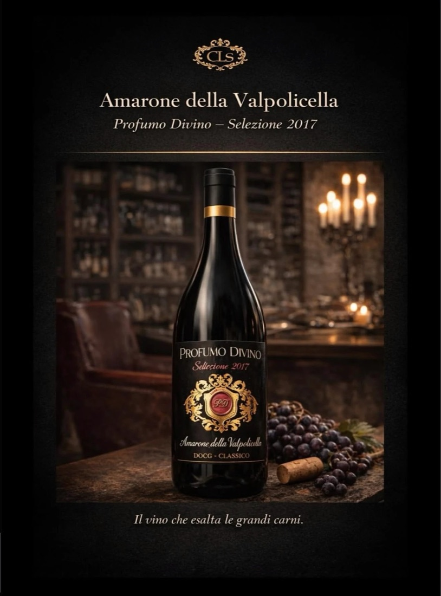

Beverage
Vino · Veneto
Selezione vini · Valpolicella
Amarone della Valpolicella Profumo Divino
DOCG Classico · Selezione 2017
Il vino che esalta le grandi carni. Accanto alle nostre selezioni di carne abbiamo scelto un Amarone che ne è il compagno naturale a tavola.
Nasce nella zona classica della Valpolicella, sulle colline a nord di Verona, da uve lasciate appassire per mesi dopo la vendemmia. Il risultato è un rosso pieno e avvolgente, granato profondo, con profumi di frutta rossa matura, ciliegia sotto spirito e spezie dolci, e un sorso caldo, morbido e lungo. L’annata 2017, dopo gli anni di affinamento, arriva oggi matura e armoniosa.
- Denominazione
- Amarone della Valpolicella DOCG Classico
- Annata
- 2017 · Selezione
- Zona
- Valpolicella Classica, Verona
- Uve
- Corvina, Corvinone e Rondinella
- Metodo
- Appassimento delle uve
- Servizio
- 16–18 °C in calici ampi, aperto un’ora prima
Abbinamenti
Lombate galiziane frollateCostata alla braceWagyuBrasati e selvagginaFormaggi stagionati
Solo operatori professionali